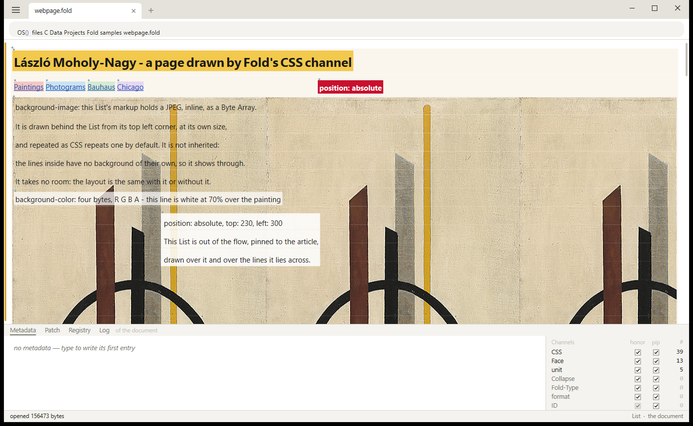
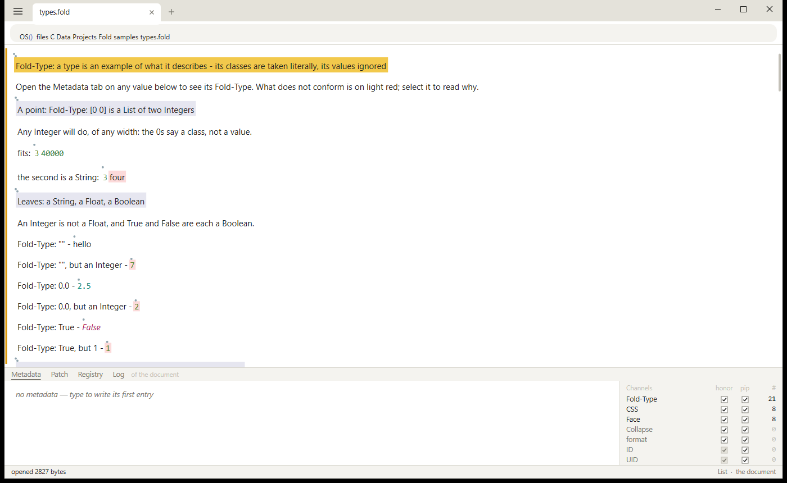

Text that unfolds.
Fold is a binary document format with no text syntax, and an editor that makes it as easy to type as plain text. The same medium is a document, a web page, a spreadsheet, a program and a file browser. It doesn't imitate each one. Underneath, they were always the same thing.

CSS metadata channel on those values. The painting is a JPEG
stored as bytes inside the page's own metadata. The editor drawing it is the same one you
type a sentence into, so view-source and view-page are one view at different depths.
One editor, every depth.
Fold's main editor is a native Windows application written in C++. The document is its byte buffer: there's no separate tree to keep in sync, edits happen in place, and saving writes the bytes as they stand. It's also where the format reaches outside itself, into the filesystem and the network.


[0 0] means
"a list of two integers." Values that don't fit are tinted, not refused. Structured editors have
failed for fifty years by forbidding invalid states, and Fold lets them exist and says so.
Edits in place
Open a file memory-mapped and every keystroke lands in the file as it's typed. If the process is killed mid-edit, what's left on disk still parses.
The filesystem is a tree
OS() is the machine as a document: input, output, files and sockets. A file's
contents are edited where it's listed, and changes are written when you accept them.
A port is a value
Write a value into OS() sockets 7451 and accept, and it's served. Clients send
Patches and get back what they evaluate to. Later changes are pushed to them as Patches too.
Most of the software stack is an artifact of text.
Plain text has no structure, no references and nowhere to put context, so every application rebuilds those for itself, and its data can't leave without losing them. Give the baseline medium those three things and a long list of separate tools turns out to be one tool, looked at from different depths.
| Today | In Fold | |
|---|---|---|
| Text editor | The same editor, with its cursor at the character level. Typing a sentence looks and feels exactly like typing a sentence. | Try it → |
| Text files vs. binary formats | One encoding. Binary, length-prefixed and random-access, and you read and edit it directly. | Try it → |
| Web browser vs. view-source | CSS is a metadata channel, so the page and its source are the same document at different depths. | Shown above |
| Comments, units, provenance, file attributes | Metadata on any value, including on metadata. Hidden until the cursor gets near it. | Try it → |
| Schema languages | A type is an example value, checked advisorily. Nothing is ever refused. | Shown above |
| Copy and paste | Paste makes a live reference, not a duplicate. Edit either and both change. | Try it → |
| Spreadsheet | Formulas are references with arithmetic. Any list can be drawn as a table. | Try it → |
| GUI buttons | A button is a pending edit to the document, and nothing changes until a person accepts it. | Try it → |
| Undo stack, macros, scripting | Your editing session is a program, and editing a computed value records a program. | Try it → |
| Logs and trace viewers | A trace is a document. Walk it with the arrow keys, and provenance opens as you arrive. | Try it → |
| JSON, CSV, URLs, Base64 | Converters that fold text formats into structure, and unfold them back out. | Built |
| File format, wire format, heap | One encoding, edited in place. Free space inside the document makes the file a heap. | Shown above |
| File manager, shell, network | The filesystem and sockets are trees in the same editor. Serving a value on a port is an edit you accept. | Built |
| Source code | A language whose grammar is Fold is already an AST: no parser, no escaping, renaming as one edit. | Roadmap |
A browser build, live on this page.
The native editor is Windows-only, so Fold also has a lighter editor in TypeScript that runs in any desktop browser. It came first, and it's where the interaction design was worked out. This is it, running:
The editor is keyboard-driven, so it's best on a computer. On a phone, the video shows it in use.
It reads like a line of text, and it behaves like a spreadsheet. Click the 3 after quantity. That selects the whole quantity: 3 pair, so press PgDn to step inside it and → to land on the number. Then press Backspace and type 2. The subtotal drops below 30, free delivery turns False, a delivery charge appears, and the total follows. Nothing on the line is a formula you can see.
Ninety seconds, if you'd rather watch.
Human-readable was a typewriter constraint.
Early computers talked to people through teletypes, so printable characters became the only building blocks of anything a person was meant to read: source code, config, HTML, JSON, the command line. Every CPU and data structure, meanwhile, uses lengths and offsets, because they allow random access. Computing pays permanently to convert between the two.
Text marks structure with reserved characters, so every byte has to be scanned and every reserved character needs an escape. Length-prefixed binary has neither problem, but its lengths have to be kept in sync with every edit, which no typewriter could do.
A smart editor is exactly that missing machinery. An editor that updates lengths on every keystroke makes a binary, random-access encoding writable by a person, in a text field, as fast as they can type.
Nothing about UTF-8 is readable as bits either. It's readable because a text editor is installed everywhere. The bar for a successor isn't legibility. It's being worth installing everywhere, which means first being exactly as good as text at being text.
Metadata
Any value, metadata included, can carry markup keyed by language. Context can be present without being in the way, and tools that don't understand it pass it through untouched.
Patch
A program that evaluates to data, written as editor operations. References, formulas, undo history and macros are all Patches. Editing is programming.
Free
Unallocated gaps at byte granularity. Edits happen in place, and a document can serve as a program's runtime heap.
Two implementations, held to one contract.
C++, native
The main editor. Win32 and Direct2D, with no other dependencies. An allocator whose free list is the document's own Free space, undo as a journal of overwritten bytes, a guard that keeps an interrupted edit parseable, lazy indexing of large files, Patch evaluation, the filesystem and sockets.
TypeScript, in the browser
The interaction probe. It settled how typing should feel, how the hierarchical cursor moves, and how copy-and-paste-as-reference and recording by demonstration behave, before the native editor built on them.
Every design decision is written down with the argument behind it. The manifesto says which decisions are settled, which are open, and what would prove the project wrong. Read the manifesto.
What would sink it.
- A medium is a network effect. Fold is worth having once there's data in it. The bet is to win one niche outright first, and agent traces are the candidate: deeply nested, full of provenance, and currently viewed as scrolling text.
- Language models read text. Their tokenizers are fitted to text, and nothing here depends on that changing. The claim that survives is narrower: structure known out of band beats structure spelled out inline on every turn.
- Parsing is cheap now. "Parsing is hard" is the weakest argument, so it's dropped. What remains is random access, in-place edits, metadata channels, references and determinism.
- Structured editors have failed for fifty years, because they forbid invalid states. Fold has no grammar to violate. Validity is advisory, and a half-finished document is always representable.
A decade-long project, now buildable.
Fold began as Infra, the subject of Chris Hall's dissertation, Infra: A New Infrastructure for Human-Readable Data, and of a SPLASH'17 Onward! paper. Five earlier implementations each stalled at the same point: how much one person can build alone. This one hasn't stalled.